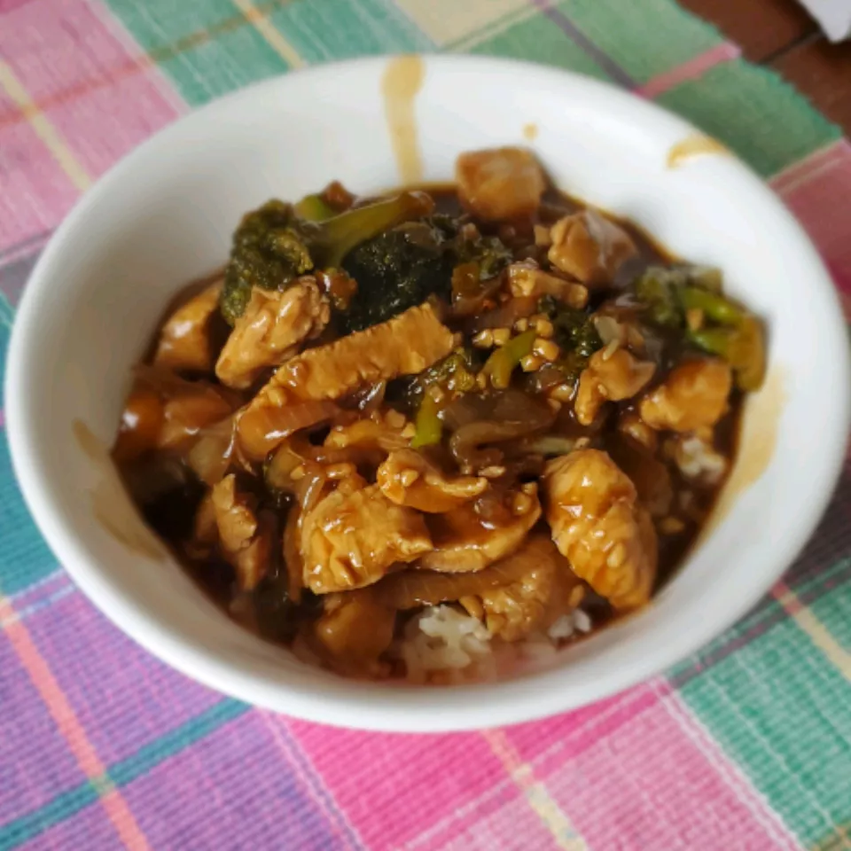

Description
This chicken and broccoli recipe is easy to make by stir-frying chicken pieces
with fresh broccoli in a mix of soy, ginger, garlic, and brown sugar. Serve with
rice for an easy, pleasing dinner.
Ingredients
- Oil
- Chicken
- Cornstarch
- Onion
- Ginger and Garlic
- Broccoli
- Water
- Sauces
- Brown Sugar
- Seasonings
Steps
- Coat the chicken in cornstarch, then cook until crisp on all sides in hot oil.
- Add the onions, ginger, and garlic and cook. Transfer to a plate.
- Cook the broccoli in the skillet.
- Meanwhile, make the sauce.
- Add the chicken mixture to the broccoli, then add the soy sauce mixture.
- Cook until the chicken and broccoli are well-coated and the sauce is thickened.
Home